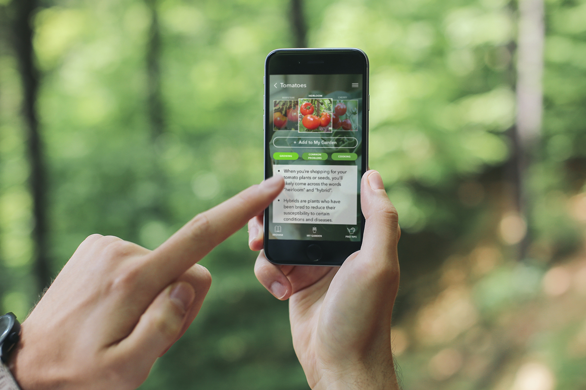
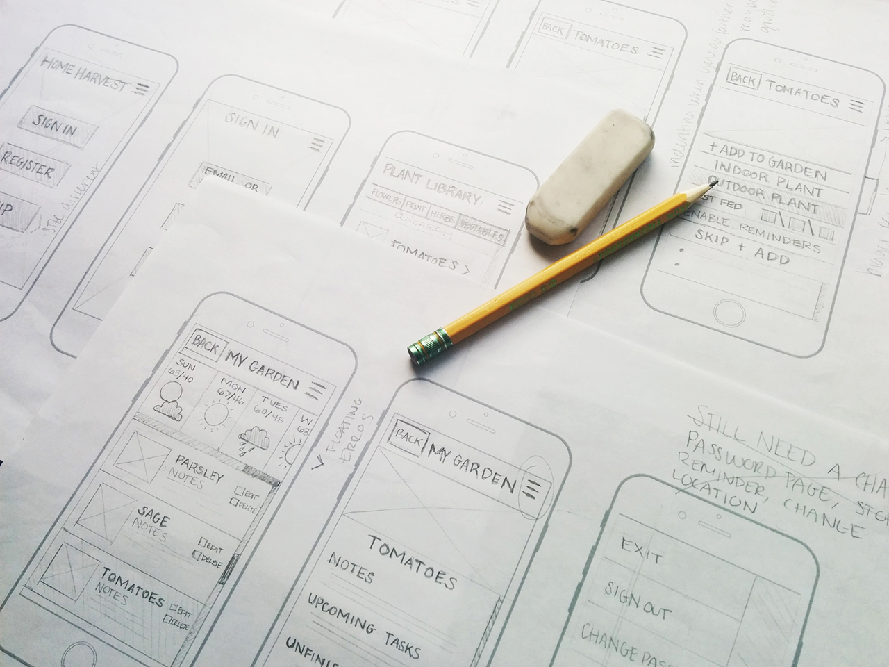
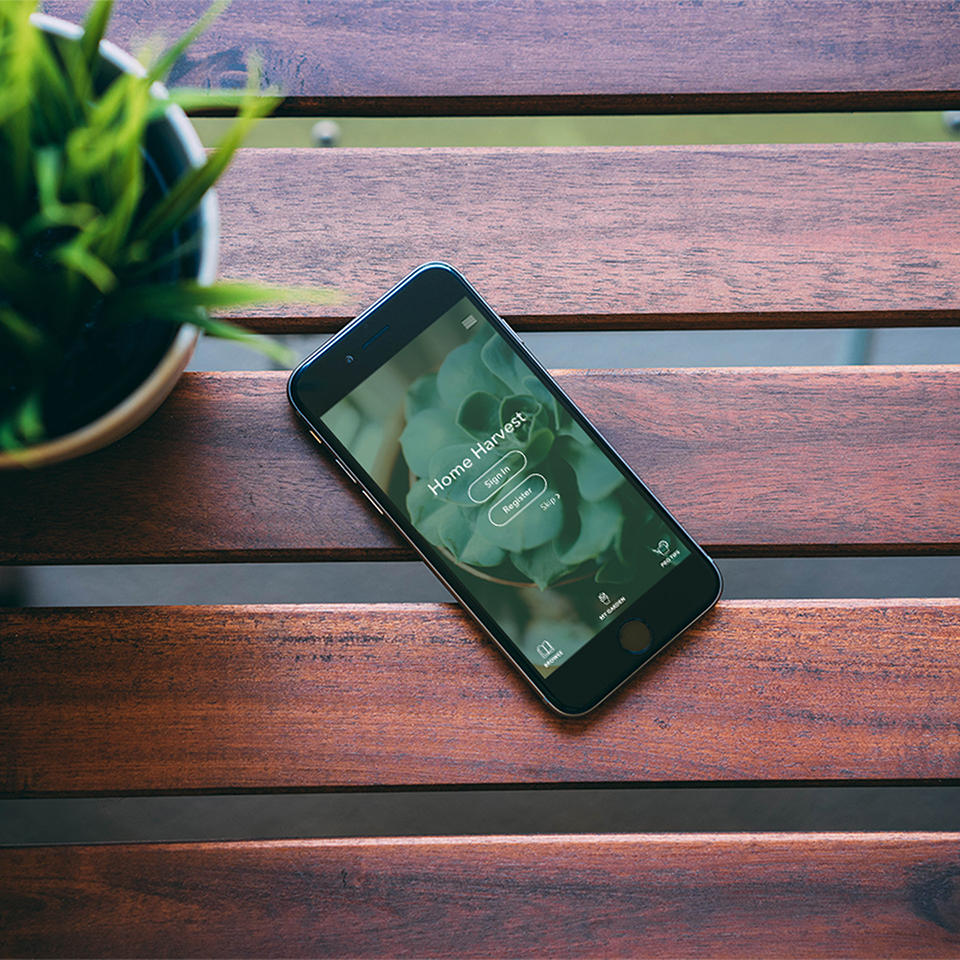
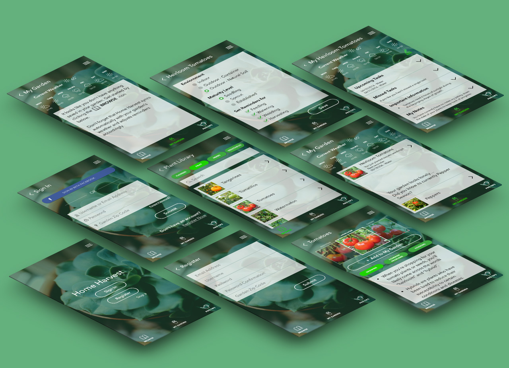

Home Harvest
The Challenge
Interview a classmate and identify the goals and painpoints in their life
Design an app that will cater to their goals
Create a clickable prototype
Client
Ben Alberson
Platform
iOS / iPhone 6
Software Used
Sketch, Invision
Invision Prototype
View Prototype
Background
I interviewed Ben several times and asked him a series of open-ended questions. After the interviews I was able to
decipher that Ben had a great passion for gardening but had trouble keeping up with his plants. He found himself
forgetting to harvest his plants which was extremely important to him. Ben went on to explain that it was
difficult to keep track of his plants; especially in conjunction with the unpredictable Seattle weather.
He never knew when to expect frost. Gardening is one of Ben's favorite hobbies and should bring him joy, not
pain-points.
The Solution
Receive reminders of important tasks like when to water or harvest your plants
Seamlessly integrate the local weather with your garden's needs
View tips from professional gardeners to help your garden thrive
Who is it for?
The app was designed for Ben, but with further research Home Harvest could be an amazing tool for all novice gardeners.
Research
-
Fully immersed myself in the goals, needs, and frustrations of a gardener
-
Conducted secondary research by reading and watching tutorial videos on how to grow tomatoes and other various herbs, flowers, and vegetables
-
Interviewed gardening enthusiasts to gather more data on what it takes to have a successful garden
Paper Prototyping
I sketched rough drafts and conducted user tests with the paper prototype. The testing led to the discovery that
I was overlooking some valuable information such as how to enter your garden location. This sent me back to
sketching.

User Testing and Iterations
After re-sketching I began to feel comfortable enough to bring the prototype to life. I created a quick clickable
proto and tested again. Testing unveiled that there were even more gardening variables that I hadn't accounted for;
such as what stage of growth the plants are in. Upon discovering this, I decided to conduct more secondary
research and edited the design again to reflect this new found knowledge.
Final Iteration


- Never miss a single task
- Feel empowered knowing you are on top of your garden's needs
- Reminders sent to your phone
- Stay organized with your garden by keeping notes about your plants
- Get suggestions on new plants based on your current garden
- Troubleshooting tips
- Cooking suggestions
Success Metrics
- Track how often users choose to utilize their reminders
- Track how many items are in their garden, the more willing they are to add suggested items or other items to their garden the more frequently they will utilize Home Harvest
What Worked and Next Steps
To further improve Home Harvest, the next steps would be to include better sorting options within your Plant Library so that you can browse plants by what is currently in season in your local neighborhood.